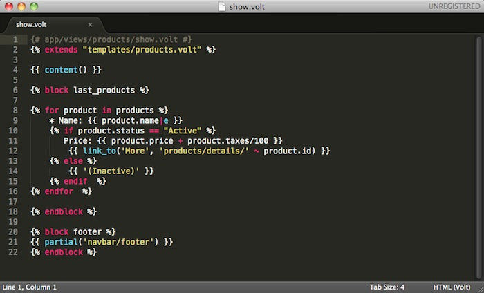

SearchTable Of ContentsPrevious topicNext topicThis Page |
Volt模板引擎¶Volt是一个超快速和设计者友好的模板语言，C语言编写的PHP。它为您提供了一套 助理写一个简单的方法的意见。伏法尔康与其他组件的高度集成， 就像你可以使用它作为一个独立的组件在你的应用程序中。 Volt是一种用C语言编写的超快速并且设计友好的PHP模板引擎，它为你提供了一套很方便的视图助手。Volt与其他的组件高度集成，就像你可以在应用程序中单独使用它一样。

Volt的灵感来源于 Twig 。最初由Armin Ronacher创建，而它则是受 Jinja 的启发。 因此，许多已经在使用Twig的开发人员将熟练的使用相同的语法。Volt的语法和功能更为强大，更多的元素以及更强的性能。 Volt被编译成PHP代码，因此基本上省却了手动编写PHP代码，实现了业务逻辑与视图分离： {# app/views/products/show.volt #}
{% block last_products %}
{% for product in products %}
* Name: {{ product.name|e }}
{% if product.status == "Active" %}
Price: {{ product.price + product.taxes/100 }}
{% endif %}
{% endfor %}
{% endblock %}
激活 Volt¶作为一种模板引擎，你需要把Volt注册到视图组件，并设置一个扩展名称或者使用默认的扩展名 .phtml ： <?php
//Registering Volt as template engine
$di->set('view', function() {
$view = new \Phalcon\Mvc\View();
$view->setViewsDir('../app/views/');
$view->registerEngines(array(
".volt" => 'Phalcon\Mvc\View\Engine\Volt'
));
return $view;
});
使用默认的 ”.phtml” 作为扩展名称： <?php
$view->registerEngines(array(
".phtml" => 'Phalcon\Mvc\View\Engine\Volt'
));
基本使用方法¶Volt的代码是由PHP和HTML构成。Volt中有一组特殊的分隔符，{% ... %} 用来执行循环语句或条件判断等，赋值语句使用 {{ ... }}。 下面是一个小示例，用于说明一些基本的功能： {# app/views/posts/show.phtml #}
<!DOCTYPE html>
<html>
<head>
<title>{{ title }} - A example blog</title>
</head>
<body>
{% if show_navigation %}
<ul id="navigation">
{% for item in menu %}
<li><a href="{{ item.href }}">{{ item.caption }}</a></li>
{% endfor %}
</ul>
{% endif %}
<h1>{{ post.title }}</h1>
<div class="content">
{{ post.content }}
</div>
</body>
</html>
你可以使用 Phalcon\Mvc\View::setVar 把控制器中的变量传递到视图中。在前面的例子中，有三个变量传递到视图中：title, menu 和 post ： <?php
class PostsController extends \Phalcon\Mvc\Controller
{
public function showAction()
{
$post = Post::findFirst();
$this->view->setVar("title", $post->title);
$this->view->setVar("post", $post);
$this->view->setVar("menu", Menu::find());
$this->view->setVar("show_navigation", true);
}
}
变量¶变量可以有属性，可以通过使用语法访问他们，如：foo.bar。如果它们是数组，你可以使用 foo[‘bar’] 的方式访问： {{ post.title }}
{{ post['title'] }}
过滤器¶变量可以使用过滤器格式化或修改，管道操作符 “|” 用于接收过滤器过滤变量： {{ post.title|e }}
{{ post.content|striptags }}
{{ name|capitalize|trim }}
以下列表是Volt内置的过滤器：
注释¶在Volt模板中可以使用 {# ... #} 分隔符添加注释，他们内部的所有文字将被忽略： {# note: this is a comment
{% set price = 100; %}
#}
List of Control Structures¶Volt提供了一组基本的但功能强大的控制结构： For¶Loop over each item in a sequence. The following example shows how to traverse a set of “robots” and print his/her name: <h1>Robots</h1>
<ul>
{% for robot in robots %}
<li>{{ robot.name|e }}</li>
{% endfor %}
</ul>
for循环嵌套: <h1>Robots</h1>
{% for robot in robots %}
{% for part in robot.parts %}
Robot: {{ robot.name|e }} Part: {{ part.name|e }} <br/>
{% endfor %}
{% endfor %}
If¶As PHP, a if statement checks if an expression is evaluated as true or false: <h1>Cyborg Robots</h1>
<ul>
{% for robot in robots %}
{% if robot.type = "cyborg" %}
<li>{{ robot.name|e }}</li>
{% endif %}
{% endfor %}
</ul>
The else clause is also supported: <h1>Robots</h1>
<ul>
{% for robot in robots %}
{% if robot.type = "cyborg" %}
<li>{{ robot.name|e }}</li>
{% else %}
<li>{{ robot.name|e }} (not a cyborg)</li>
{% endif %}
{% endfor %}
</ul>
变量赋值¶在模板文件中，可以使用 “set” 设置或改变变量的值： {% set fruits = ['Apple', 'Banana', 'Orange'] %}
{% set name = robot.name %}
Expressions¶Volt对表达式提供了一组基本的支持，包括字符串以及常用的操作：
Arrays¶无论你使用PHP 5.3 或 5.4，你都可以用 “[ ]” 括起来的形式来创建数组： 译者注：如果在PHP文件中想用这种方式创建数组，PHP最低版本应该为PHP 5.4 {# Simple array #}
{{ ['Apple', 'Banana', 'Orange'] }}
{# Other simple array #}
{{ ['Apple', 1, 2.5, false, null] }}
{# Multi-Dimensional array #}
{{ [[1, 2], [3, 4], [5, 6]] }}
{# Hash-style array #}
{{ ['first': 1, 'second': 4/2, 'third': '3'] }}
数学计算(Math)¶你可以在模板文件中直接使用以下操作符进行计算：
比较运算符(Comparisions)¶下面是在模板中可用的比较运算符：
逻辑运算符(Logic)¶Logic operators are useful in the “if” expression evaluation to combine multiple tests:
其他操作符(Other Operators)¶Additional operators seen the following operators are available:
The following example shows how to use operators: {% set robots = ['Voltron', 'Astro Boy', 'Terminator', 'C3PO'] %}
{% for index in 0..robots|length %}
{% if isset robots[index] %}
{{ "Name: " ~ robots[index] }}
{% endif %}
{% endfor %}
Using Tag Helpers¶Volt 高度集成 Phalcon\Tag,因此你可以在Volt模板中方便的使用它们： {{ javascript_include("js/jquery.js") }}
{{ form('products/save', 'method': 'post') }}
<label>Name</label>
{{ text_field("name", "size": 32) }}
<label>Type</label>
{{ select("type", productTypes, 'using': ['id', 'name']) }}
{{ submit_button('Send') }}
</form>
下面是生成的PHP代码： <?php echo Phalcon\Tag::javascriptInclude("js/jquery.js") ?>
<?php echo Phalcon\Tag::form(array('products/save', 'method' => 'post')); ?>
<label>Name</label>
<?php echo Phalcon\Tag::textField(array('name', 'size' => 32)); ?>
<label>Type</label>
<?php echo Phalcon\Tag::select(array('type', $productTypes, 'using' => array('id', 'name'))); ?>
<?php echo Phalcon\Tag::submitButton('Send'); ?>
</form>
要想在Volt模板中调用 PhalconTag 助手，你只需要使用它们在Volt中对应的缩写版本即可：
视图集成(View Integration)¶Volt 模板集成了 Phalcon\Mvc\View, 你的模板层次结构和默认的层次结构一样，你可以这样使用 partials ： {{ content() }}
{{ partial("partials/footer.volt") }}
模板继承(Template Inheritance)¶模板继承：你可以创建一个基础模板，其他模板继承自这个基础模板，可提高模板文件的复用性。基础模板使用 blocks 定义一个块，这个块可以是可以被子模板覆盖的。现在让我们假设，我们有以下的基础模板： {# templates/base.volt #}
<!DOCTYPE html>
<html>
<head>
{% block head %}
<link rel="stylesheet" href="style.css" />
{% endblock %}
<title>{% block title %}{% endblock %} - My Webpage</title>
</head>
<body>
<div id="content">{% block content %}{% endblock %}</div>
<div id="footer">
{% block footer %}© Copyright 2012, All rights reserved.{% endblock %}
</div>
</body>
</html>
其他的模板可以继承自这个基础模板，同时替换掉基础模板中的 block: {% extends "templates/base.volt" %}
{% block title %}Index{% endblock %}
{% block head %}<style type="text/css">.important { color: #336699; }</style>{% endblock %}
{% block content %}
<h1>Index</h1>
<p class="important">Welcome on my awesome homepage.</p>
{% endblock %}
并非所有的 block 都需要在子模板中进行替换(意思是，你可以替换需要的那一部分)。上面的示例最终输出结果如下： <!DOCTYPE html>
<html>
<head>
<style type="text/css">.important { color: #336699; }</style>
<title>Index - My Webpage</title>
</head>
<body>
<div id="content">
<h1>Index</h1>
<p class="important">Welcome on my awesome homepage.</p>
</div>
<div id="footer">
© Copyright 2012, All rights reserved.
</div>
</body>
</html>
作为一个片断，”extends” 后跟的路径是一个相对于视图存放目录的相对路径(即 app/views).
Setting up the Volt Engine¶Volt是可以通过配置改变默认的行为的，下面的例子说明如何做到这一点： <?php
//Register Volt as a service
$di->set('voltService', function($view, $di) {
$volt = new \Phalcon\Mvc\View\Engine\Volt($view, $di);
$volt->setOptions(array(
"compiledPath" => "../app/compiled-templates/",
"compiledExtension" => ".compiled"
));
return $volt;
});
//Register Volt as template engine
$di->set('view', function() {
$view = new \Phalcon\Mvc\View();
$view->setViewsDir('../app/views/');
$view->registerEngines(array(
".volt" => 'voltService'
));
return $view;
});
如果你不重用 Volt，你可以不把它作为一个服务，而是在注册 view 服务的时候，用匿名函数的方式注册Volt模板引擎： <?php
//Register Volt as template engine with an anonymous function
$di->set('view', function() {
$view = new \Phalcon\Mvc\View();
$view->setViewsDir('../app/views/');
$view->registerEngines(array(
".volt" => function($view, $di) {
$volt = new \Phalcon\Mvc\View\Engine\Volt($view, $di);
//set some options here
return $volt;
}
));
return $view;
});
Volt 配置选项：
|